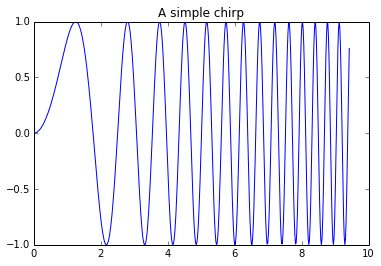

Converting notebooks using Pelican
IPython notebook files are a useful way of presenting information.
This entry was created in IPython notebook and then converted
into a GitHub pages page using Pelican.
Converting links using definitions within external_links.md
To make it easier to both enter and use external URLs, I extended
add_links.py
to substitute in links found in external_links.md.
All link keys in square brackets within this notebook that are also
found in external_links.md are changed into appropriate markdown
link text.
Running Python code:
import matplotlib.pyplot as plt
import numpy
%matplotlib inline
x = numpy.linspace(0, 3 * numpy.pi, 500)
plt.plot(x, numpy.sin(x**2))
plt.title('A simple chirp');

Mathematics
Let us start with Bayes' theorem:
$$
P(\mu~|~D) = \frac{P(D~|~\mu)P(\mu)}{P(D)}
$$
We'll use a flat prior on $\mu$ (i.e. $P(\mu) \propto 1$ over the region of
interest) and use the likelihood
$$
P(D~|~\mu) = \prod_{i=1}^N \frac{1}{\sqrt{2\pi\sigma_x^2}}\exp\left[\frac{(\mu -
x_i)^2}{2\sigma_x^2}\right]
$$
Computing this product and manipulating the terms, it's straightforward to show
that this gives
$$
P(\mu~|~D) \propto \exp\left[\frac{-(\mu - \bar{x})^2}{2\sigma_\mu^2}\right]
$$
which is recognizable as a normal distribution with mean $\bar{x}$ and standard
deviation $\sigma_\mu$.
That is, the Bayesian posterior on $\mu$ in this case is exactly equal to the
frequentist sampling distribution for $\mu$.